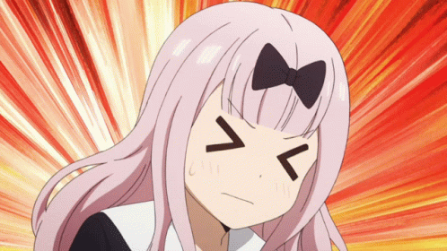
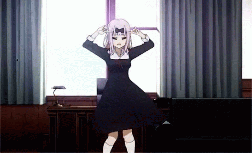

Kaguya Sama, El Amor es la Guerra, es un anime que se estrenó en 2019. Se trata de una comedia romántica (énfasis en la comedia) que nos cuenta la vida de dos estudiantes enamorados. Pero ambos consideran que confesar su amor a la otra persona, los pondría en una situación de debilidad frente al otro. Así que se empeñan de una y mil maneras para conseguir que sea el opuesto quien se confiese.

OPENING DE KAGUYA SAMA
OPENING EN ESPAÑOL LATINO

OPENING 2
OPENING 2 EN ESPAÑOLLATINO
